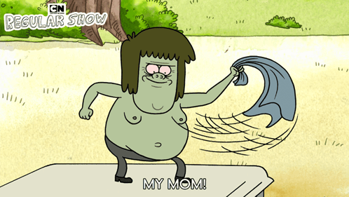
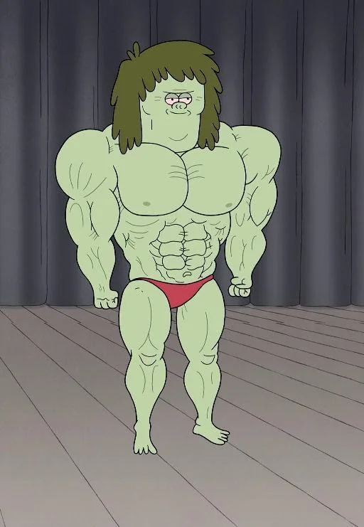
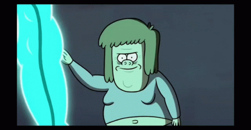
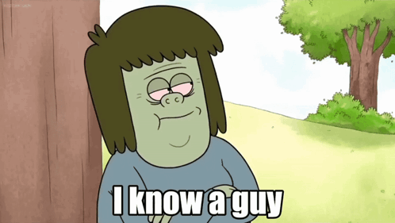

Piada da Minha Mãe
Tipo: Psicológico / Debuff
Musculoso lança uma piada de "Sabe quem mais...", deixando o oponente irritado e quebrando completamente a sua concentração, reduzindo a defesa inimiga.
Jardineiro do Parque / Mitch Sorenstein / Fã de Pegadinhas

Arte oficial do personagem
Musculoso (cujo nome verdadeiro é Mitch Sorenstein) é um dos jardineiros do parque, embora raramente seja visto trabalhando duro. Ele é verde, baixinho, gordinho, tem cabelo na altura dos ombros e vive se gabando de sua força e de seu físico, mesmo não sendo exatamente "musculoso". Seu melhor amigo é o Fantasmão, um fantasma com uma mão na cabeça, que o acompanha em todas as suas aventuras e pegadinhas.
Ele é famoso por seu pavio curto, atitudes imaturas e, principalmente, por sua obsessão em fazer piadas de "Minha Mãe!". Apesar de seu jeito grosseiro e de adorar provocar Mordecai e Rigby, ele é muito leal aos seus amigos do parque e está sempre disposto a ajudar quando a situação sai do controle, muitas vezes usando sua força bruta ou seus contatos esquisitos.

Tipo: Psicológico / Debuff
Musculoso lança uma piada de "Sabe quem mais...", deixando o oponente irritado e quebrando completamente a sua concentração, reduzindo a defesa inimiga.

Tipo: Ataque Físico
Quando zombam dele ou machucam seus amigos, ele tira a camisa, grita como um louco e destrói tudo ao seu redor usando sua força bruta e impulsividade.

Tipo: Suporte
Musculoso usa seu celular para ligar para um de seus contatos esquisitos, que milagrosamente aparece com a ferramenta, o item ou a solução bizarra para resolver qualquer problema.
"Sabe quem mais gosta de estilizar páginas com CSS? A MINHA MÃE! WOOOOOOOO!!!"
— Musculoso